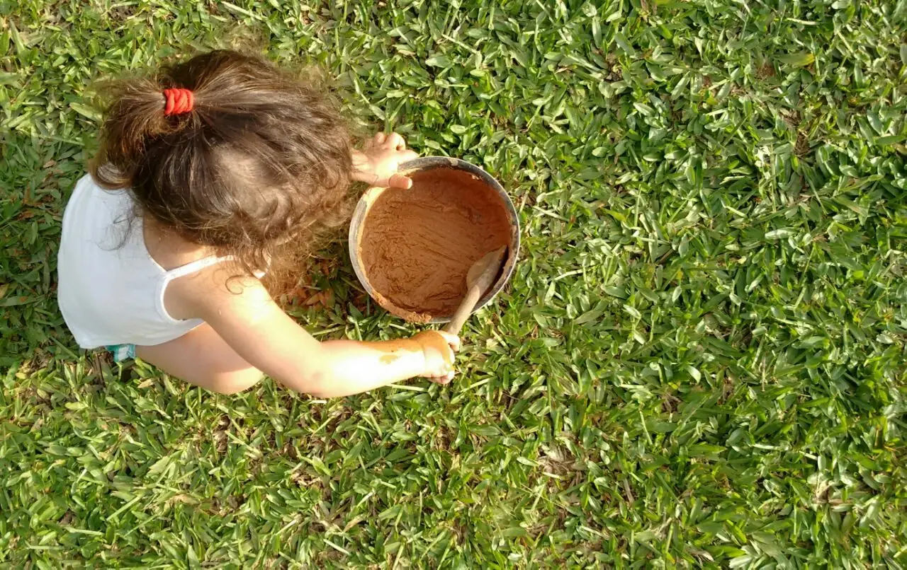
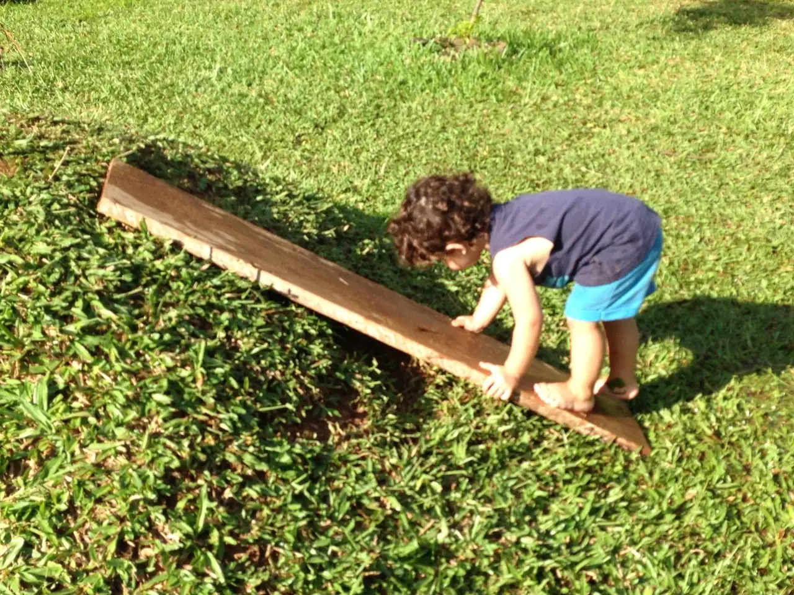
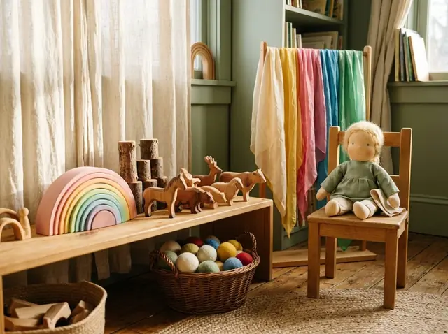
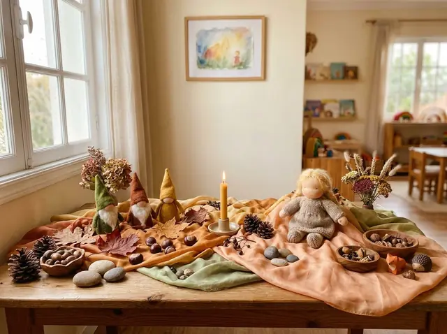
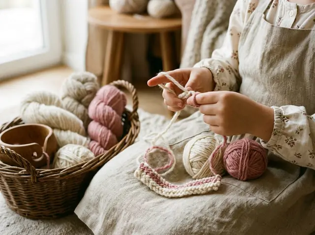
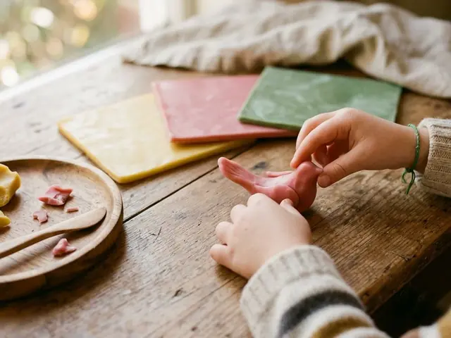

Educação Infantil · Joinville/SC
Um jardim onde a infância floresce no seu próprio tempo
Brincar livre, natureza, ritmo e alimentação orgânica para crianças de 1 a 6 anos — num ambiente acolhedor como um colo quentinho, inspirado na Pedagogia Waldorf.
- 1 a 6 anos
- Matutino, vespertino e integral
- Alimentação orgânica


O Jardim Ciranda
Imagine…
…um Jardim de Infância daqueles que traz o cheiro da flor e da terra, da brisa do vento e do calor do sol, da música de roda e do aconchego. Que segue o ritmo tranquilo da vida, que permite o sono que restabelece e a alimentação que revigora.
Um Jardim com colo quentinho que acolhe, que conta uma história e deixa a criança brincar. Onde a criança sente-se em casa, com brinquedos feitos com o carinho das mãos e em materiais naturais.
Aqui tudo vibra em alegria, respira brincar livre e se envolve na Natureza.
Fundado para trazer às crianças de Joinville uma educação inspirada na Pedagogia Waldorf, o Jardim Ciranda existe para contribuir com a formação de seres humanos livres. E os pais? Participam ativamente, trazendo o exemplo do cuidado e do trabalho comunitário — fazendo do nosso jardim um lugar ainda mais vivo.
“A nossa mais elevada tarefa deve ser a de formar seres humanos livres que sejam capazes de, por si mesmos, encontrar propósito e direção para suas vidas.”
Por que a Pedagogia Waldorf
Uma infância inteira, vivida com presença
No primeiro setênio (0 a 7 anos), a criança aprende pela imitação, pelo movimento e pelos sentidos. Por isso cuidamos do ambiente, do ritmo e do exemplo — e não da antecipação de conteúdos.
-
Ritmo que dá segurança
A alternância entre concentração e expansão — o “inspirar e expirar” do dia — traz previsibilidade, calma e confiança para a criança.
-
Brincar livre
Brinquedos simples e naturais, muitos feitos à mão, convidam a fantasia a dar o “acabamento” — a imaginação é a grande professora.
-
Natureza todos os dias
Explorar, correr, subir, balançar, pisar na grama e mexer na terra: o corpo saudável é a base de um pensar vivo e ativo.
-
Alimentação que revigora
Comida principalmente orgânica, inclusiva e integral, com cereais, frutas, legumes e mel — preparada com as crianças, num cardápio com ritmo semanal.
-
Respeito ao tempo da infância
Sem aceleração nem ensino formal precoce. Cada conquista — andar, falar, pensar — é vivida plenamente, com qualidade acima de quantidade.
-
Escola e família juntas
Encontros, festas, mutirões e grupos de estudo: os pais participam ativamente e caminham conosco na educação de seus filhos.
Quer sentir esse ambiente de perto?
Agende uma Visita PedagógicaNosso espaço e rotina
Um lugar pensado para os sentidos
Cada objeto tem seu valor e seu lugar. Materiais naturais, cores suaves e muito verde: um prolongamento do lar.






Um dia no Jardim
O dia respira como uma canção: momentos de expansão alternam com momentos de recolhimento.
- AcolhidaChegada tranquila, com cantigas e o abraço de quem espera.
- Brincar livreDentro e fora da sala, com materiais naturais e muita imaginação.
- Roda rítmicaCirandas, versos e gestos inspirados na natureza e nas estações.
- Lanche partilhadoPreparado junto com as crianças, com gratidão à mesa.
- Jardim e parqueTerra, areia, água, árvores e balanços — corpo em movimento.
- Conto de fadasA história do dia, contada (nunca lida) com calma e repetição.
- Descanso e despedidaPara o integral: almoço, sono reparador e brincar da tarde.
O ritmo da semana
Cada dia tem sua atividade artística — a repetição traz segurança e profundidade.
-
 SegundaPintura em aquarela (úmido sobre úmido)
SegundaPintura em aquarela (úmido sobre úmido) -
TerçaDia do pão: amassar, esperar, assar
-

QuartaModelagem com cera de abelha -
QuintaHorta e cuidado com o jardim
-
SextaTrabalhos manuais e arrumação amorosa da sala
* Ritmo ilustrativo; pode variar conforme a turma e a época do ano.
As festas do ano
A criança vive o ciclo anual com todo o seu ser. As festas, preparadas com as famílias, trazem imagens da natureza e marcam o tempo com beleza.
- PáscoaRenovação
- São JoãoCalor e partilha
- MicaelCoragem
- PrimaveraFlorescer
- AdventoEspiral de luz
- AniversáriosO dia de cada um
Palavra das famílias
O que muda quando a infância é respeitada
Relatos de quem vive o Jardim Ciranda no dia a dia.
Nosso filho chegava em casa agitado de outra escola. Aqui ele encontrou ritmo: dorme melhor, come de tudo e canta as cantigas da roda o dia inteiro.
A adaptação foi feita com tanto cuidado que nos sentimos acolhidos também. Ver a nossa filha voltar com as mãos sujas de terra e o coração feliz não tem preço.
Participar dos mutirões e das festas transformou a nossa família. A escola nos ensinou a desacelerar e a olhar para a infância com mais presença.
Como ingressar
Três passos, sem pressa
Acreditamos em uma escolha consciente. Por isso, o caminho começa com um encontro.
-
Agende uma visita
Pelo formulário ou WhatsApp. Você conhece o espaço, sente o ambiente e tira suas primeiras dúvidas.
-
Conversa pedagógica
Um encontro com a equipe para apresentar a proposta Waldorf e conhecer a história da sua criança e da sua família.
-
Vivência e matrícula
Combinamos uma adaptação gradual e respeitosa. Tudo no tempo da criança — e dos pais também.
Perguntas frequentes
Qual a idade das crianças atendidas?
Acolhemos crianças de 1 a 6 anos, com ritmo e atividades adequados a cada fase do desenvolvimento.
Quais são os períodos disponíveis?
Matutino, vespertino, semi-integral e integral. Consulte as vagas disponíveis para cada turma.
Como é a alimentação?
Principalmente orgânica, inclusiva e integral, evitando açúcar refinado. Restrições e alergias são acolhidas com atenção.
Preciso conhecer a Pedagogia Waldorf para matricular?
Não! Apresentamos a proposta com calma na conversa pedagógica e oferecemos encontros e grupos de estudo para as famílias.
As crianças são alfabetizadas no jardim?
Na Pedagogia Waldorf, o primeiro setênio é dedicado ao corpo, aos sentidos e à imaginação. A alfabetização formal acontece no Ensino Fundamental, quando a criança está madura para ela — e chega lá com bases sólidas.
Agende sua visita
Será uma alegria receber sua família
Conte um pouquinho sobre vocês. Respondemos com carinho, geralmente no mesmo dia útil.
Visita pedagógica
Preencha os campos e escolha como prefere falar com a secretaria.
Venha nos conhecer. A ciranda está aberta para vocês. 🌻
Agende uma visita e sinta, de perto, o ritmo tranquilo de um jardim de infância Waldorf.